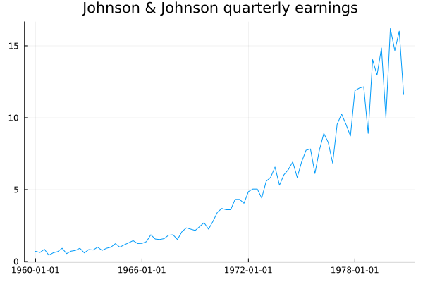
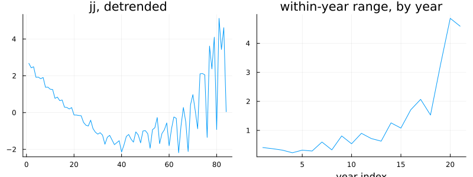
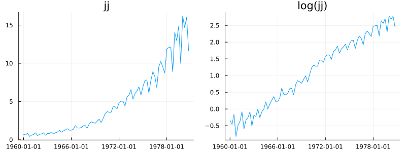
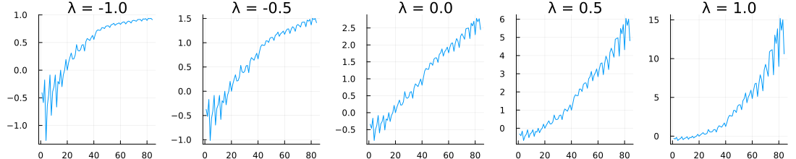
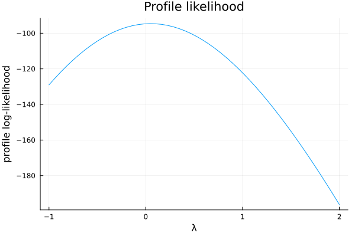
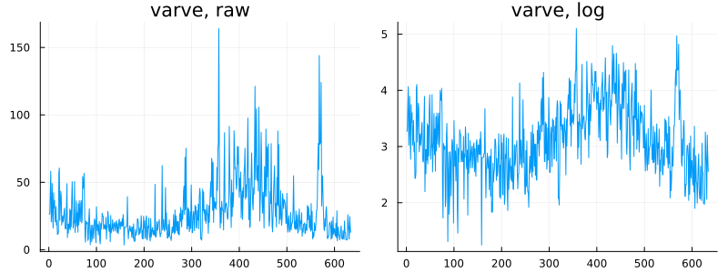

Transformations
using TSAnalytics, Plots, Statistics
jj = dataset("jj")
plot(jj.date, jj.value; title="Johnson & Johnson quarterly earnings", legend=false)
Back to the series that opened this book. In 1960 the seasonal swing between a year's best and worst quarter is a few cents. By 1980 it is close to five dollars. The pattern has not changed — the same quarters are consistently high and low throughout — but its size scales with the level, and every technique built across the last six chapters has quietly assumed a series whose variability stays roughly put. This one does not, and it is time to deal with it properly rather than continuing to work around it.
Subtracting does not help
The obvious attempt: if the problem is that the series grows, remove the growth.
t = collect(Float64, 1:length(jj.value))
X = hcat(t, ones(length(jj.value)))
beta = X \ jj.value
detrended = jj.value .- X * beta
n_years = length(jj.value) ÷ 4
yearly_range = [maximum(jj.value[(4(y-1)+1):(4y)]) - minimum(jj.value[(4(y-1)+1):(4y)]) for y in 1:n_years]
p1 = plot(detrended; title="jj, detrended", legend=false)
p2 = plot(yearly_range; title="within-year range, by year", xlabel="year index", legend=false)
plot(p1, p2; layout=(1,2), size=(800,300))
Detrending removes the level and leaves the actual problem completely untouched — the first panel still visibly fans out. The second panel makes it unarguable: the within-year range climbs from a few tenths of a dollar in the earliest years to well over four dollars in the latest ones, regardless of what has been done to the mean. This difficulty is not additive, and no amount of subtraction was ever going to fix it. It is multiplicative, and multiplication is what taking logs undoes.
The log, and the family it belongs to
p1 = plot(jj.date, jj.value; title="jj", legend=false)
p2 = plot(jj.date, log.(jj.value); title="log(jj)", legend=false)
plot(p1, p2; layout=(1,2), size=(800,300))
The swings become close to constant width and the growth becomes close to linear. One operation fixed both problems simultaneously, which is not a coincidence — exponential growth carrying proportional seasonality is exactly the shape a logarithm linearises.
lambdas_demo = [-1.0, -0.5, 0.0, 0.5, 1.0]
plots = [plot(boxcox(jj.value, lam); title="λ = $lam", legend=false) for lam in lambdas_demo]
plot(plots...; layout=(1,5), size=(1100,220))
λ = 1 reproduces the raw series exactly; λ = 0 is the log; the values in between and beyond interpolate and extrapolate around both. Seen this way, the family is continuous, and the real question stops being "should I take logs?" and becomes "how far along this scale should I go?" — a question with a genuinely numerical answer rather than a binary one. λ = 0 is defined as the log by a limiting argument, not by naive substitution into the general formula (plugging λ = 0 directly would divide by zero), and it is exactly the kind of boundary case a careless truthiness check gets wrong — a forward pointer to the falsy-zero bug that becomes Chapter 16's own disagreement box.
Choosing λ
prof = boxcox_profile_plot(jj.value)
plot(prof.lambdas, prof.loglik; xlabel="λ", ylabel="profile log-likelihood",
title="Profile likelihood", legend=false)
peak_idx = argmax(prof.loglik)
println("MLE peak: λ = ", round(prof.lambdas[peak_idx], digits=3))
near_top = findall(l -> l >= maximum(prof.loglik) - 2, prof.loglik)
println("within 2 log-lik units of the peak: λ ∈ [", round(prof.lambdas[near_top[1]], digits=2),
", ", round(prof.lambdas[near_top[end]], digits=2), "]")MLE peak: λ = 0.041
within 2 log-lik units of the peak: λ ∈ [-0.14, 0.29]The classical approach reads the peak off this curve by eye — which is exactly what MASS::boxcox in R is built to support, since it is primarily a plotting function rather than an optimiser, and that design choice says something honest about how the method was actually meant to be used in practice. Here the peak sits at λ ≈ 0.04, close enough to the log that the two would be indistinguishable to most readers of a forecast. The curve is also visibly flat near its top: every value from roughly -0.14 to 0.29 sits within two log-likelihood units of the maximum, which is the profile's way of saying it genuinely does not care very much within that whole range. When the data is this indifferent, prefer the round number. A log transform a colleague can interpret at a glance beats a λ = 0.041 power that nobody can.
gl = guerrero_lambda(jj.value, 4)
println("Guerrero: λ = ", round(gl, digits=3))Guerrero: λ = 0.154Guerrero's criterion answers a different question. It splits the series into subseries by seasonal period, computes the coefficient of variation of their rescaled variability across subseries, and picks the λ that minimises it — a criterion explicitly about making seasonal variability consistent across the series, not about maximising residual normality the way the profile likelihood does. On jj the two land close together (0.04 against 0.15), well within the flat region already found above. They do not always agree this closely.
guerrero_lambda was independently verified this session against real R (forecast::BoxCox.lambda(method="guerrero"), R 4.6.0) on three cases, agreeing to five significant figures on two of them — the third, a boundary case at λ = -1, was traced to R's own coarser default optimiser tolerance rather than a formula error, confirmed by tightening R's optimize() tolerance and watching it converge to the same answer. A genuine bug was found and fixed during that same verification: the non-seasonal case originally split the series into two long halves, where R's real source (forecast:::guer.cv) instead splits into short subseries of length 2. So the implementation itself is not the open question here — it is checked. The two criteria still disagree by design, and the disagreement can be substantial: on the real AirPassengers series, the profile-likelihood peak sits at λ ≈ 0.16 while Guerrero lands at λ ≈ -0.30 — a real, expected gap between a criterion built around residual normality and one built around cross-subseries consistency, not a defect in either.
Getting back
beta_log = X \ log.(jj.value) # a separate fit, on the log scale, not the raw-scale beta above
resid = log.(jj.value) .- X * beta_log
sigma2 = var(resid)
next_t = length(jj.value) + 1
logmean_forecast = beta_log[1]*next_t + beta_log[2]
naive_back = exp(logmean_forecast)
corrected_back = exp(logmean_forecast + sigma2/2)
println("naive back-transform: ", round(naive_back, digits=3))
println("bias-corrected back-transform: ", round(corrected_back, digits=3))naive back-transform: 17.755
bias-corrected back-transform: 17.977This catches almost everyone at least once. Exponentiating the mean of the logs does not recover the mean of the original series — it recovers something closer to the median, systematically too low relative to the mean whenever the distribution is right-skewed, which a log-transformed series practically always is. On this particular one-step forecast the gap is a modest 1.25%; on a more volatile series the same effect can be substantial. Whether the gap matters depends entirely on what was actually asked for. A median forecast is exactly what the naive back-transformation gives, correctly. A mean forecast — and most people who say "forecast" mean the mean — needs the correction added back in. Checking directly, boxcox_inv performs the plain, uncorrected inverse only, with no bias term applied automatically; a caller who wants the corrected version has to add it, as done above, rather than assuming the function already has.
varve = dataset("varve")
p1 = plot(varve.value; title="varve, raw", legend=false)
p2 = plot(log.(varve.value); title="varve, log", legend=false)
plot(p1, p2; layout=(1,2), size=(800,300))
println("raw variance: ", round(var(varve.value), digits=1))
println("log variance: ", round(var(log.(varve.value)), digits=3))raw variance: 412.6
log variance: 0.406A second case, and a cleaner one than jj because there is no seasonality here to distract from the variance problem itself — glacial sediment thickness, Shumway and Stoffer's own standard example for exactly this point, with variance falling by three orders of magnitude under the log.
Indian macroeconomic series are very often published as index numbers with a base year set to 100 — the IIP, the WPI, the CPI. An index is already a ratio by construction, which means proportional growth is baked into how the series is built in the first place, and such series often do want a log transform on that basis alone. It is worth checking rather than assuming, but the prior is genuinely different from a series measured in physical units. There is also a practical wrinkle worth carrying forward: a rebased index resets to 100 partway through its own history, which is a level shift, and taking logs does not remove it — Chapter 3's rebasing spike survives a log transform completely intact.
Where this leaves you
Part I is finished. A series can now be differenced, filtered, measured for its own autocorrelation, examined for the rhythms hiding inside it, and — this chapter's contribution — have its variability stabilised before any of the rest is trusted. Every one of those decisions, though, has been made so far by eye: does this series need differencing, does this series need a transform, is twenty-one weeks the right window. Part II starts replacing the eye with something that can actually be checked.